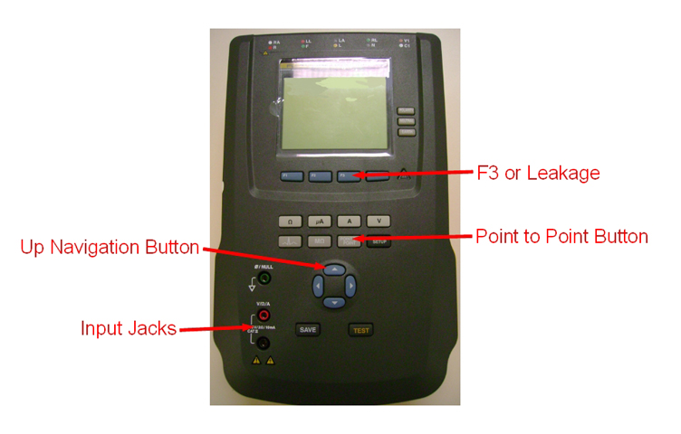

- 00000018WIA30006F20GYZ
- id_131061112.6
- Jan 24, 2025 5:42:01 AM
Ground Leakage Current Test
Prerequisites
| Personnel requirements | |||
|---|---|---|---|
| Required persons | Preliminary requirements | Procedure | Finalization |
| 1 | - | 60 minutes | 5 minutes |
| Tools and test equipment | |||
|---|---|---|---|
| Item | Quantity | Part number | Manufacturer |
| Digital Multimeter (DMM) | 1 | - | - |
| 1k Ohm Precision Resistor (For the method using DVM) | - | - | - |
| Dale 600 or 601 (120 VAC) Safety Analyzer or Dale 600E or 601E (220 VAC) Safety Analyzer | 1 | 46-285647P1 or 46-328406G1 or 46-285647P14 or 46-328406G2 | - |
| Fluke ESA612 Electrical Safety Analyzer | 1 | 5453348 | - |
| Hazard Class 2 Personal Protective Equipment (PPE) | 2 | - | - |
| Brass Master Padlock with Brass Shackle | 2 | 46-194427P320 | - |
| Red Warning LOTO Tag | 2 | 46-194427P322 | - |
| 1 Inch Multi-Locking Device (if multiple service personnel are involved) | 1 | 46-194427P313 | - |
| Safety | ||||
|---|---|---|---|---|
|
Before working in any GE HealthCare MR suite or doing any GE HealthCare service procedure, you must:
If you have any safety concerns at any time, do not begin work or immediately stop work and move to a safe location. Immediately contact your supervisor or site safety officer for instructions on how to proceed. | ||||
| ||||
| ||||
| ||||
| ||||
| Required conditions |
|---|
All personnel performing this procedure must have completed proper electrical hazard training courses:
|
| Measuring ground resistance is completed and passed. |
| Confirm that all cables are installed correctly. |
| Confirm that the Main Disconnect of the PDU is ON. |
| Confirm that all subsystem cabinet circuit breakers and subsystem power switches are ON. |
| Confirm that Hazard Class 2 Personal Protective Equipment (PPE) is available. |
About this task
| Notice | |
|---|---|
This document contains two methods for measuring Ground Leakage Current Test:
Ground Leakage Current Test Using DVM and 1kOhm Resistor Procedure
Procedure
Finalization
Ground Leakage Current Test Using Safety Analyzer
Performing LOTO
Procedure
- Properly shut down the system (if the host computer is up).
- Perform LOTO procedure.
- With a digital voltmeter (DVM), check that all energy has dissipated. Confirm that the PDU indicators lights are OFF.
Setting Up Safety Analyzer
Procedure
Note Two types of safety analyzers are available. Use the instructions for the safety analyzer that is available.
- Set up the safety analyzer near the front of the PDU.
-
Using the Dale Safety Analyzer:
- Connect one clamp-type lead to the EXTERNAL jack on the top of the Dale safety analyzer. Connect the other clamp-type lead to the CHASSIS jack on the top of the Dale safety analyzer.
- On the Dale safety analyzer, set the main selector switch to EXTERNAL.
Figure 2. Connections on Dale Safety Analyzer 
-
Using the Fluke ESA612 Safety Analyzer:
- Note At facilities with 110-120 VAC, a fault error may appear when you power the meter on. Press F4 OK to clear the error, and continue.Turn on the Fluke safety analyzer.
Figure 3. Fluke ESA612 Electrical Safety Analyzer 
- Select the [point to point] button.
- Select the [F3 or Leakage] button.
- Select the [Up Arrow] once so that AC Only displays.
- Insert the leads into the input jacks.
- The safety analyzer is now set up with the two leads attached and ready to be connected to the PDU.